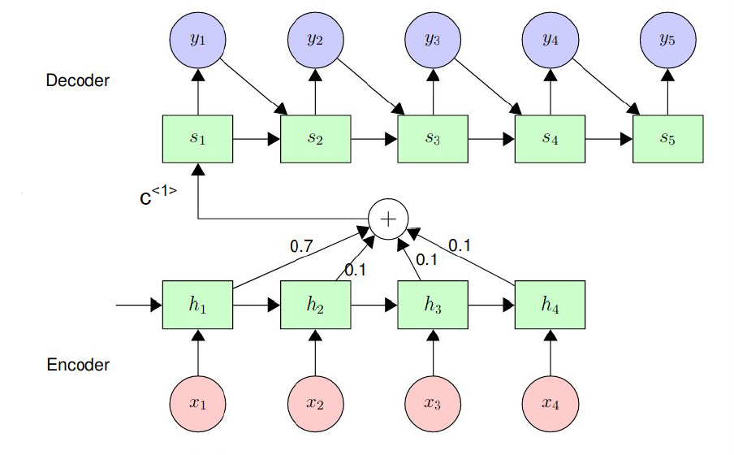

AUGUST 2023
This project aims to identify the optimal emotion analysis model for businesses using Yelp Reviews and Business Dataset.The thesis comprises of literature review, data preprocessing, implementation, and results.It emphasizes the role of emotion analysis in understanding customer sentiments and addresses challenges in processing unstructured data. The findings contribute insights into effective emotion analysis techniques for businesses to enhance decision-making and customer satisfaction.
In this project, I cleaned and analyzed COVID-19 data using SQL Server to identify trends and calculate key metrics such as infection and death rates. I handled data inconsistencies, standardized date formats, and performed complex queries to derive insights. The results were visualized in Tableau, where I created interactive dashboards displaying infection rates, trends over time, and geographic hotspots. This provided a clear and comprehensive view of the pandemic's impact, aiding in informed decision-making.
Executed an embedded image processing project involving the transformation of raw sensor data into BGR images, fisheye calibration, distortion correction, panorama generation, top view generation, lane detection, object detection, and image segmentation.
Leveraged radar and lidar data to create an automotive surround view system, implementing OpenCV and Faster RCNN for detecting cars, identifying empty parking slots, and performing segmentation.
The project involves developing a custom CNN layer in TensorFlow and Keras for image classification. It optimizes convolution operations across 1-D, 2-D, and 3-D data. TensorFlow's Tensorboard visualizes training metrics, aiding in hyperparameter tuning. Data augmentation techniques enhance model robustness. A traditional CNN model is also implemented for comparative analysis with Custom CNN model
This project analyzed word associations using graph theory and data analytics. Key objectives included examining the connectivity of cue and non-cue words by calculating their mean degrees, implementing a Personalized Page Rank function to create sub-networks for specific word pairs to visualize associations, and assessing centrality measures (Betweenness, Page Rank, Eigenvector Centrality) to identify influential words in the network. The analysis, conducted in R using the igraph and ggraph libraries, provided insights crucial for natural language processing and machine learning applications

In this project, I developed a Neural Machine Translation (NMT) system for English-Irish translation using an Encoder-Decoder architecture. Key tasks included data collection and preprocessing, model implementation, training, and evaluation. I prepared a parallel English-Irish dataset, implemented an Encoder-Decoder model in PyTorch, and evaluated its performance using the BLEU metric. To enhance accuracy, I integrated an attention mechanism, resulting in improved BLEU scores. This project demonstrated my ability to handle end-to-end NMT system development and optimization.
I undertook a project focused on sustainability in the energy industry, utilizing the 'Electricity Consumption Prediction Time-Series Dataset' to develop precise regression models for hourly electricity consumption prediction. The project involved rigorous preprocessing, feature engineering, and model performance evaluation using metrics like RMSE, R, and R2.